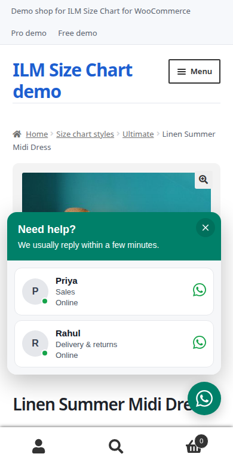

Display rules
5.1 Where the widget shows
- Pages: choose the page types that show the widget. All page types are selected by default. Untick the pages where the widget must not show.
- Devices: Computers and phones, Computers only, or Phones only.

5.2 Limit to products or categories
- Only these products (product pages): search a product by name, reference or ID. Empty means every product. With products or categories chosen, product pages show the widget only for those.
- Only these categories (category and product pages): search a category by name or ID.
5.3 Address rules
- Also show on addresses containing (one per line): add a part of an address, one per line, to show the widget there.
- Never show on addresses containing (one per line): add a part of an address, one per line, to hide the widget there.